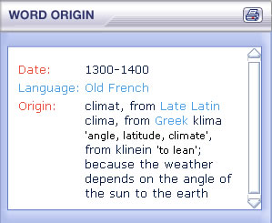

Where do words come from? If the Word origin button is highlighted, you can find out the history of the chosen word.
Here you can see that the word climate comes from the Old French and was made part of English in the 14th century.

You can search for all the words that entered English from a particular language or at a particular time. Click on the search button and choose the Word origin search.